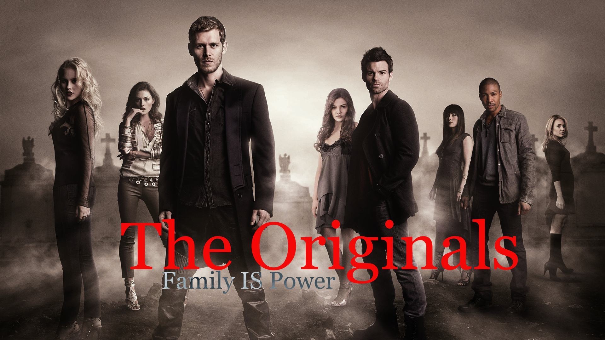

Sobre a Série The Original:
"The Originals" é uma série de televisão americana criada por Julie Plec, que estreou em 2013. Ela é um spin-off de "The Vampire Diaries" (Diários de um Vampiro), outra série de sucesso também criada por Plec. "The Originals" se concentra na história dos primeiros vampiros do mundo, a família Mikaelson, que são os vampiros originais. A trama se desenrola na cidade de Nova Orleans e segue os irmãos originais: Klaus (interpretado por Joseph Morgan), Elijah (interpretado por Daniel Gillies), e Rebekah (interpretada por Claire Holt), junto com outros membros da família e outros seres sobrenaturais. A história gira em torno de suas lutas pelo poder, vingança e lealdade à família, bem como suas interações com outras criaturas sobrenaturais, incluindo bruxas, lobisomens e vampiros. A série explora temas como amor, traição, redenção e o preço da imortalidade. Ela também mergulha na mitologia dos vampiros, expandindo o universo estabelecido em "The Vampire Diaries". Ao longo das temporadas, "The Originals" apresenta várias reviravoltas na trama, incluindo alianças inesperadas, batalhas épicas e conflitos familiares intensos. A série recebeu elogios por sua narrativa envolvente, performances dos atores e personagens complexos. "The Originals" foi ao ar por cinco temporadas, concluindo em agosto de 2018. Durante seu tempo no ar, conquistou uma base de fãs dedicada e contribuiu para o sucesso contínuo do universo expandido de "The Vampire Diaries".